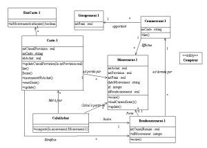
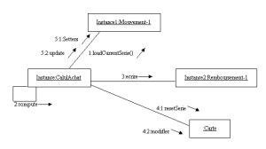

Rédaction des documents d’analyse avec U.M.L
Date de publication : 12/04/2006
5. Détaillons ...
5.1. Préambule
5.2. Réunion : L’acte de fidélité
5.2.1. Cas dégradés
5.2.2. Fonctions annexes
5.3. Cas d’utilisation
5.3.1. Acteur
5.3.2. Liste des scénarios
5.4. Scénario : Passage d’un achat
5.5. Annexe
5.5.1. Message d’échange avec le TPE
5.5.2. Diagramme de classes
5.6. Autres scénarios
5. Détaillons ...
5.1. Préambule
Vous devez maintenant vous concentrer sur la spécification des besoins qui permettra d’alimenter les autres tâches.
Trois scénarios dans le cas d’utilisation principal sont décrits. Il est maintenant temps de les préciser à tour de rôle.
Le cœur du métier est l’acte de fidélité. C’est donc le premier point par lequel commencer. Pour cela une réunion d’analyse avec le groupement et le constructeur de TPE est organisée.
5.2. Réunion : L’acte de fidélité
Vous abordez avec le groupement l’utilisation du TPE chez les commerçants. Il apparaît qu’il ne faut pas oublier :
- Les cas dégradés et leurs solutions
- Le fait que le TPE est le principal moyen de communication entre le commerçant et le système d’information
5.2.1. Cas dégradés
| Cas |
Solution |
| Erreur sur la transaction (Généralement erreur sur la saisie du montant) |
Annulation de la dernière transaction qu’il y ait remboursement des remises cumulées ou non. Puis le commerçant recommence la transaction.
Pour éviter les fraudes, seule la dernière transaction peut être annulée. La carte doit être dans le lecteur. |
| Perte du ticket |
Demande de duplicata.
Le duplicata ne peut porter que sur la dernière transaction ou annulation. Il n’est pas nécessaire que la carte soit présente dans le lecteur |
| Time-out (Temps de réponses > 2 mn) |
Abandon de la transaction. Le commerçant recommence. |
| Pas d’établissement de la ligne |
Abandon de l’acte de fidélité. |
5.2.2. Fonctions annexes
Les fonctions annexes sont les suivantes :
| Cas |
Solution |
| Le client souhaite connaître l’état de sa carte (Cumul des provisions, rang dans la série) |
Le commerçant introduit la carte dans le lecteur et par menu, choisit une option « Consultation ». |
| Le commerçant souhaite connaître le cumul des remises du mois précédent et du mois en cours pour son commerce |
Le commerçant introduit sa carte commerçant et par menu choisi une option "Interrogation". |
Le constructeur du TPE présent à la réunion, nous permet de mettre au point les échanges. Nous apprenons au passage :
- Qu’un commerçant possède une « carte commerçant » qui permet de l’identifier. Le numéro de commerce sera donc le numéro de cette carte.
- Que toutes les cartes possèdent un numéro d’application qui permet de réaliser les contrôles de validité de la carte introduite. Ainsi, seront rejetées toutes les cartes n’ayant pas ce numéro (vous ne voulez pas de cartes de parking !).
En devançant la réunion sur l’administration des cartes, nous découvrons que certaines cartes peuvent être annulées ou remplacées en cas perte.
5.3. Cas d’utilisation
La réunion sur l’acte de fidélité permet l’établissement du cas d’utilisation correspondant.
Comme pour chaque cas d’utilisation, nous décrivons succinctement les acteurs et les scénarios
5.3.1. Acteur
| Acteur |
Rôle |
| Commerçant |
Unique acteur du cas d’utilisation. Il est responsable du passage des actes de fidélité en présence du client. |
5.3.2. Liste des scénarios
| Scénario |
Description |
| Passage d’un achat |
Scénario principal du cas d’utilisation. Il consiste à enregistrer un achat dans le commerce afin de provisionner des remises. Si plus de 10 achats ont déjà été effectués, le système doit proposer le remboursement des remises provisionnées. |
| Annulation |
Doit permettre d’annuler le dernier acte d’achat effectué en cas d’erreur. Si le commerçant n’est pas certain si la transaction précédente est enregistrée ou non, il peut interroger la carte client. |
| ... |
|
5.4. Scénario : Passage d’un achat
Puis vous devez approfondir chacun des scénarios ... Vous commencez par le plus important : l’acte d’achat.
Le cas nominal du passage d’un acte d’achat au titre de la fidélité a été vu lors du cas d’utilisation principal. Il semble maintenant nécessaire de le détailler en tenant compte des contrôles et des cas dégradés. Un graphe de séquence serait trop complexe et illisible. Nous préférons un diagramme d’activité.
Il reste à d’écrire plus précisément chaque étape.
| Code |
Etape |
Commentaire |
| 1 |
Saisie du montant |
La saisie du montant est effectuée par le commerçant. C’est le premier acte du scénario. On suppose que toutes les transactions sont en Euro. |
| 2 |
Contrôle du montant |
En cas d’échec, Le TPE affiche :
Le montant saisi et la mention « Montant incorrect »
La transaction est abandonnée.
Si le montant est correct, le TPE passe en étape 3. |
| 3 |
Affichage montant |
Le TPE contrôle le montant et l’affiche sur l’écran :
le montant saisi et la mention « Introduire carte »
Si la carte n’est pas introduite dans les 2 minutes, la transaction est arrêtée. |
| 4 |
Introduction carte |
Le commerçant demande la carte au client et l’introduit dans le TPE |
| 5 |
Contrôle carte |
Le TPE lit la bande magnétique sur la carte. En cas de carte illisible ou incorrecte, le TPE affiche le message « Carte incorrecte » et abandonne la transaction. |
| 6 |
Initialisation de la connexion |
Le TPE appelle le serveur par le réseau commuté.
En cas d’échec, le TPE essaie au plus 3 tentatives.
Si la connexion est réussie, le TPE affiche le message « Connexion en cours ».
Si la connexion est en échec après 3 tentatives, le TPE affiche « Echec de connexion » et la transaction est abandonnée.
Le message d’échange d’initialisation est donné plus en annexe. |
| 7 |
Réception transaction |
Le serveur prépare le traitement de la demande. Il aiguille sur le traitement des achats. |
| 8 |
Contrôle commerçant |
Le serveur recherche la carte commerçant dans la base de donnée.
Si le commerçant est non identifié ou n’est pas autorisé le serveur va en 8.1 sinon il va en 9. |
| 8.1 |
Préparation commerçant invalide |
Le serveur formate les informations à envoyer au TPE. Le message envoyé au serveur est de type échec.
La transaction est abandonnée. |
| 9 |
Contrôle de la carte |
Le serveur lit la carte dans la base de données.
En cas d’échec, il va en 9.1
En cas de lecture réussie, il va en 9.2. |
| 9.1 |
Création de la carte |
Le serveur crée un enregistrement carte dans la base de données avec les informations suivantes :
- N° de carte
- mtCumulProvision = 0
- nbAchat = 0
- etatCarte = « OK »
|
| 9.2 |
Contrôle de la carte |
Si la carte est annulée ou remplacée, le serveur va en 9.3 sinon en 10. |
| 9.3 |
Préparation carte invalide |
Le serveur formate les informations à envoyer au TPE. Le message envoyé au serveur est de type échec. |
| 10 |
Enregistrement de l’achat |
Le serveur enregistre l’achat dans la base de données. Le montant du cumul des provisions est mis à jour.
Le serveur va à l’étape 11. |
| 11 |
Calcul des remises |
Montant remise = Mt Achat * Taux remise - Frais.
Mise à jour du mtCumulProvision de la carte
Incrémentation du nombre d’achats de la carte. |
| 12 |
Préparation provision |
Mise à jour de la base de données.
Le serveur formate les informations à envoyer au TPE. Le message envoyé au serveur est de type « Transaction acceptée ». |
| 13 |
Remboursement |
Mise à jour de la base de données
Mt Remboursement = Somme des montants remises provisionnées.
Mise à zéro du montant des cumuls de provision de la carte et du nombre d’achats de la série.
Le serveur formate les informations à envoyer au TPE. Le message envoyé au serveur est de type « Remboursement acceptée ». |
| 14 |
Réception demande ticket |
Le TPE reçoit le message de la part du serveur et prépare l’édition.
Les opérations 15 et 16 sont en parallèle. |
| 15 |
Edition ticket |
(Présentation de la maquette du ticket ici.) |
| 16 |
Accusé de réception |
Le TPE envoie au serveur un accusé de réception. Le serveur peut alors valider les mises à jour de la base de données |
5.5. Annexe
Quelques précisions d’ordre technique sont nécessaires. Elles ne sont pas destinées à l’utilisateur final qui validera l’analyse. Un chapitre particulier (à défaut d’un document spécifique) est consacré à ces annexes.
5.5.1. Message d’échange avec le TPE
| Message |
N° de la carte commerçant (6N)
Code fonction (XXX)
N° de la carte (6N)
Date du message (SSAAMMJJ)
N° du message (NNNN)
Montant de l’achat (NNNNNN.NN)
Libellé du message : 15 lignes de 20 caractères |
| Code fonction |
AC : Achat
EC : Echec
AN : Annulation
... |
5.5.2. Diagramme de classes
Le modèle de données pour réaliser les transactions d’achat doit être précisé. le résultat obtenu est légèrement plus complexe que lors de la réponse au cahier des charges ... Mais il reste un modèle fonctionnel.
Diagramme de classe : Acte d’achat
Ce diagramme doit être complété, notamment par la liste des statuts :
| |
Liste des états de la carte (Classe EtatCarte) |
| OK |
Carte acceptée |
| AN |
Carte annulée |
| RE |
Carte remplacée |
Remarques :
- Pour des raisons d’optimisation en terme de performance, nous choisissons de stocker les résultats des calculs plutôt que de les recalculer à chaque transaction. Ceci nous met aussi à l’abri des modifications dans les formules de calcul des remises.
- Les remboursements sont mémorisés dans une nouvelle table. Il stocke le résultat des calculs et le mouvement qui a portée le remboursement. Tous les mouvements sont identifiés par un attribut Id.
- De manière similaire, tous les remboursements porteront un identificateur. Les transactions ayant donné lieu à un remboursement seront indicées par cet identificateur. Ceci permettra de retrouver toutes les transactions d’une série.
- Nous construisons une classe CalculAchat pour le calcul des remises et la cinématique de l’ensemble. Cette classe permet de centraliser les algorithmes de calcul.
Il peut être nécessaire de vérifier qu’aucune méthode ou attribut ne sont oubliés par des diagrammes de collaboration (Les diagrammes de séquence sont parfois plus lisibles ...). Seul le cas des remboursements est donné ici :
Diagramme de collaboration : Remboursement
5.6. Autres scénarios
Les autres scénarios sont à analyser de la même manière.
Pour chacun des scénarios, il est nécessaire de construire un diagramme de classe. Deux approches sont possibles.
- Consolider les diagrammes de classes en ajoutant les nouvelles fonctions et attributs qui apparaissent
- Construire un diagramme de classe ne permettant de réaliser que le scénario en cours.
La deuxième approche nous semble préférable. Elle permet de lire les scénarios indépendamment les uns des autres et de conserver une approche « De quoi ai-je besoins pour réaliser le cas d’utilisation ? ».
Une deuxième étape est alors nécessaire pour consolider tous les diagrammes de classes. Cette consolidation permettra de changer de point de vue et passer à une vue « métier », c’est-à-dire à une consolidation des besoins par entité (Carte, mouvement, commerçant, ...)..
Ce document est soumis à la licence GNU FDL traduit en français ici.
Permission vous est donnée de distribuer, modifier des copies de cette page tant que cette note apparaît clairement.
|


{kind=link}
{kind=link}
{kind=link}
{kind=link}